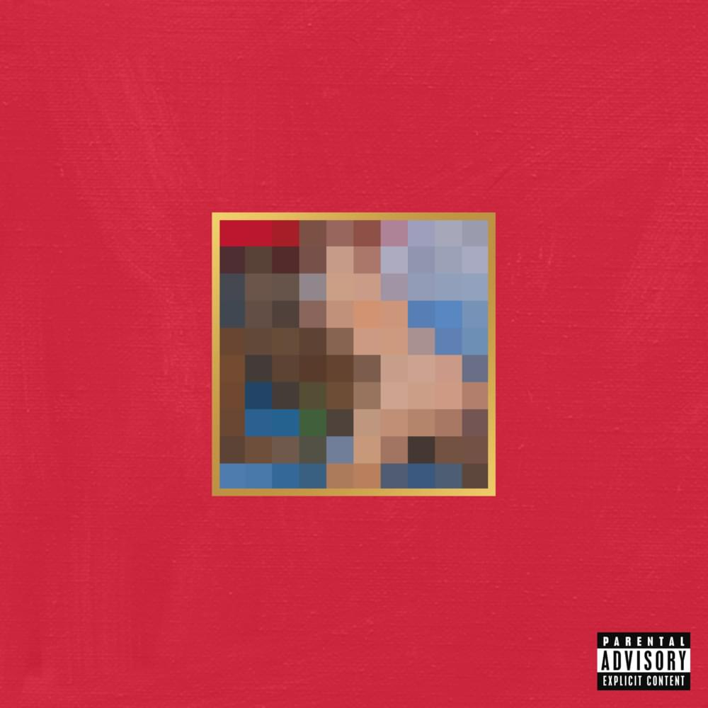

1. Базовое адаптивное изображение
Что происходит:
- Изображение занимает 100% ширины контейнера
- Высота автоматически рассчитывается для сохранения пропорций
- Работает на всех устройствах
2. Picture element с форматами

Что происходит:
- Браузер выбирает лучший формат для отображения
- Автоматическое переключение между форматами
- Фолбэк для старых браузеров
3. Разные изображения для разных экранов
Что происходит:
- Десктопы: desktop.jpg (1200px+)
- Планшеты: tablet.jpg (768px-1199px)
- Мобильные: mobile.jpg (до 767px)
- Браузер сам выбирает подходящее изображение
4. Поддержка Retina дисплеев

Что происходит:
- Обычные экраны: стандартное разрешение
- Retina экраны: изображение в 2 раза четче
- Автоматическое определение плотности пикселей
5. Object-fit свойства
object-fit: cover
object-fit: contain
object-fit: fill
Что происходит:
- cover - заполняет контейнер, обрезая края
- contain - вписывает полностью, могут быть поля
- fill - растягивает, искажая пропорции
6. Адаптивная галерея


Что происходит:
- На десктопах: 4 изображения в ряд
- На планшетах: 2 изображения в ряд
- На мобильных: 1 изображение в ряд
- Особенности: Плавное масштабирование, сохранение пропорций